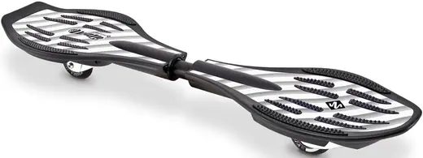

Waveball
Le Football Réinventé sur Waveboard
Le Football Réinventé sur Waveboard
Le Waveball est un sport innovant combinant le football avec l'agilité du waveboard. Les joueurs se déplacent sur des waveboards tout en contrôlant un ballon pour marquer des buts. C’est un sport spectaculaire, dynamique et fun qui demande équilibre, stratégie et esprit d’équipe.
Le waveboard est une planche à deux roues pivotantes, reliées par une plateforme articulée. Contrairement au skateboard, le waveboard permet une propulsion sans poser le pied au sol, grâce à un mouvement de torsion du corps. Il offre une grande maniabilité et est idéal pour les déplacements fluides et rapides.
Le Waveball développe la coordination, l’agilité, la stratégie collective et la cohésion d’équipe. C’est aussi un excellent moyen de se dépenser tout en s’amusant, accessible à tous les niveaux.
Vous cherchez un nouveau sport collectif ? Un sport fun en 2025 ? Rejoignez le club Waveball de Margny-lès-Compiègne ! Entraînements réguliers, matchs, tournois, et ambiance conviviale garantie.
Une question ? Écris-nous à waveballmargny@gmail.com